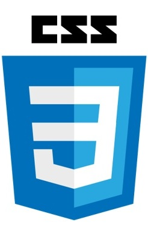

desarrollado por Edgar2
HTML,CSS y JavaScript:
Son los tres pilares fundamentales del desarrollo web que trabajan juntos para crear paginas web dinamicas e interactivas.
HTML se encargara de la estructura y el contenido, CSS del diseño y la presentacion, y JavaScript de la interactividad y la funcionalidad.
Definiciones

es el lenguaje de marcado que define la estructura y el contenido de una pagina web.Utiliza etiquetas para delimitar diferentes elementos, como parrafos, encabezados, imagenes, enlaces, etc.

Es un lenguaje de estilos que se utiliza para controlar la presentacion de una pagina web.Permite definir aspectos como los colores, fuentes tamaños, margenes, etc, de los elementos HTML.

Es un lenguaje de programacion que permite agregar funcionalidad interactiva a una pagina web.Permite manipular elementos HTML, responder a eventos del usuario, realizar calculos, etc.
Analogia de la web y una casa:
Estructura de la casa.
Es como los simientos, las paredes, los techos y distribucion de las habitaciones
HTML define la estructura basica de una pagina web: que elementos hay(titulo, parrafos, botones, imagenes, etc.), pero sin preocuparse por como se ve
Decoracion y estilo de la casa.
Es como los cimientos, las paredes, los tipos de pisos, los muebles, las cortinas, el diseño de la cocina.
CSS se encarga de como se ve la pagina: colores, fuentes, margenes, alineaciones, estilos responsivos... los visual.
Los sistemas electricos y electronicos de la casa.
Es como los interruptores que encienden las luces,las puertas automaticas, el termostato inteligente.
JavaScript añade funcionalidad e interactividad haciendo que pasen cosas como respuesta a un evento.

Resumen
"Los tres lenguajes son esenciales para el desarrollo web, y cada uno juega un papel crucial en la creacion de paginas web modernas y funcionales